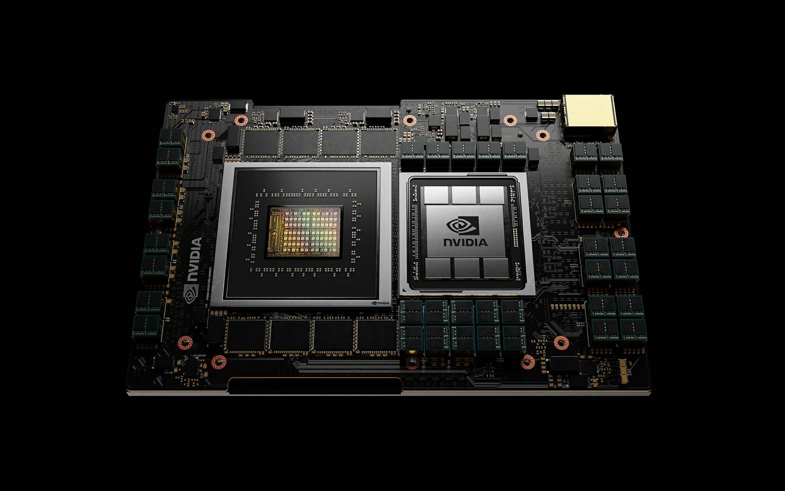

GPU가 최근부터 데이터센터에 많이 채택되긴 했으나 그렇다고해서 CPU 자체가 아예 필요하지 않은 것은 아니다. 여전히 GPU보다는 CPU가 연산 처리 속도와 성능 면에서는 앞서는 사실이기 떄문에 GPU가 완전히 CPU를 대체하지는 못하고 있는 것이다.
그렇기 때문에 엔비디아는 이미 선점한 데이터센터용 GPU를 미끼 상품으로 하여 자사의 GPU와 강력한 호환성을 갖는 데이터 센터용 CPU까지 선택하도록 하는 전략을 펼치고 있다. 그러한 전략의 산물이 2023년 출시 예정인 데이터센터용 CPU, GRACE이다. 실제로 엔비디아는 GRACE와 엔비디아의 GPU를 같이 이용했을 때, 연산 처리 속도가 인텔의 CPU와 엔비디아의 GPU를 같이 이용했을 때보다 10배 더 빠르다는 결과를 발표하기도 하였다.
인텔 CPU와 엔비디아 GPU 조합 엔비디아 GRACE와 엔비디아 GPU 조합